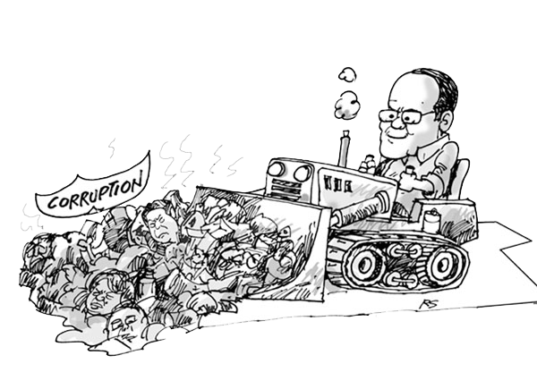

Bad Governance and Informal actors
Organized crime syndicates and powerful families are examples of ther informal actors that exists. The influence of the following actors is felt more clearly in local governments, and in rural and urban areas. Most often than not, these actors are the cause of corruption, in that legitimate government objectives are distorted by their illegal and private interests. Worse, they manipulate government officials and agencies, and cause widespread yet organized violence in the community. In urban and rural areas, for example, the rich and powerful families control the economy by controlling the local government officials. They bring about a controlled environment so that decisions must always favor them. Allegedly, even government officials, both local and national, are not just influenced but themselves members of organized crime syndicates with the purpose of using public office and, consequently, public funds for personal aggrandizement.When these actors and informal structures disrupt, corrupt and upset the legitimate objectives and ideals of the society, bad governance will result which is considered as the chief problem of the society. Problems deepen and multiply because of bad governance. Inasmuch as economics and politics are interrelated, poor economy is caused by bad governance. International aids and loans, for instance, are scarce in a badly governed country. International donors and financial institutions are increasingly basing their aid and loans on the condition that reforms that ensure “good governance” are undertaken.Recognizing these realities, current economic and political goals of countries all over the world are aimed at “good governance.” It is an ideal so broad and elusive the realization of which is yet to be achieved. More so, the contemporary meaning of “development” is good governance, or more specifically a reform from faulty governance to good governance.
Other Factors:

Cartoon by Roni Santiago
-
PROBLEM IN COMMUNICATION
The Filipino people deserves a clearer communication from our leaders. Chaos due to misunderstanding happens when we are playing with words that we don't mean. We can decipher the truth from a false statement. We do not only hear, but instead we listen and try to understand every singe word coming from the most powerful man of our land.
-
PROBLEM IN CORRUPTION
Corruption is a never-ending political and social problem that our country has been facing. It is like a cancer of our society and it has never been eradicated just like our problem with illegal drugs and criminality. The President has to focus on solving the root cause of our societal cancer and he has to set as an example of a leader who is just not only in words but also in deeds and thoughts. He should not corrupt the minds of his people. Corruption is not only in the form of money, but it is also on our moral and emotional and spiritual beliefs.
-
VALUES EDUCATION, MORAL RECOVERY AND SPIRITUAL TRANSFORMATION
In school, we have taught our children the right values. However, there is a need to strengthen this approach and there must be an active participation of the family. Values education enhances ones' character and personality. If we can raise a well-disciplined and responsible citizen, then we can have a better world to live in.
Characteristics
According to United Nations Economic and Social Commission for Asia Pacific, good governance has eight (8) characteristics: Participatory, Follows the Rule of Law, Transparent, Responsive, Consensus Oriented, Equitable and Inclusive, Effective and Efficient, and Accountable.
Participation
All men and women should have a voice in decision-making, either directly or through legitimate intermediate institutions that represent their interests. Such broad participation is built on freedom of association and speech, as well as capacities to participate constructively.
Rule of law
Legal frameworks should be fair and enforced impartially, particularly the laws on human rights.Governance is enforced legally and impartially to protect the rights of the people.
Transparency
Transparency is built on the free flow of information. Processes, institutions and information are directly accessible to those concerned with them, and enough information is provided to understand and monitor them.Every decision made and implemented should be readily available to the public with information in any medium.
Responsiveness
Services are provided within a timeframe.Institutions and processes try to serve all stakeholders.
Consensus orientation
Good governance mediates differing interests to reach a broad consensus on what is in the best interests of the group and, where possible, on policies and procedures.By understanding the different needs of each group, the interests of the many will be reached in a reasonable method.
Equity
All men and women have opportunities to improve or maintain their well-being.Every member of the community should have some equal rights in participating and never left behind in the decision-making process.
Effectiveness and efficiency
Processes and institutions produce results that meet needs while making the best use of resources.One purpose of good governance is to manage and use available resources effectively and efficiently.
Accountability
Decision-makers in government, the private sector and civil society organisations are accountable to the public, as well as to institutional stakeholders. This accountability differs depending on the organisations and whether the decision is internal or external to an organisation.
For the PEOPLE
If people were enlightened about their rights they should make leaders to focus on their responsibilities.“We need to actually educate ourselves. We need awareness. Example if Government is doing a project in our community we should supervise it to make sure that the project is done well. That was the reason why the government embarked on sensitising workshops, enlightenment and educating society at the grassroots to ensure sustainability of good governance in their communities.
Good Governance is FOR ALL
This is the test for every one of us today to partake in the enormous courage of helping manufacture a local government structure. Regardless of whether you will look for a profession in the private segment or in government after you leave the hallways of your college, you will have a critical stake in local governance inside the structure of country building. As future collaborators being developed and as God-loving citizens and as participants in the task of building a strong and united nation either as private professionals or businessmen , or maybe as prime movers in the continuing challenge of good governance, whether on the local or national level, regardless of whether on the local or national level, let this be both a test and an open door for every one of you to move and be part!